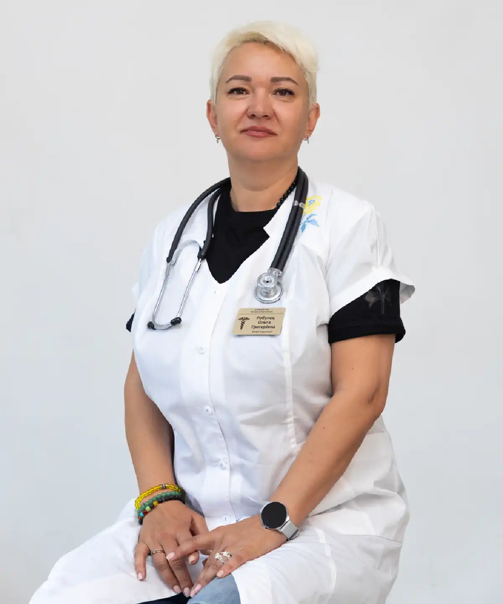

+38(068)
79 72 782
+38(068)
79 72 782Кодирование от алкоголизма в Харькове
Трезвость начинается сегодня


Бесплатная консультация, работаем круглосуточно 24/7
Трезвость начинается сегодня

Дата написания: 1 мар. 2025 г.
Последнее обновление: 19 окт. 2026 г.
Кодирование от алкоголизма в Харькове — один из методов лечения алкогольной зависимости, направленный на поддержание трезвости, снижение вероятности повторного употребления спиртного и формирование мотивации к отказу от алкоголя. В наркологической практике используются медикаментозные, психотерапевтические и комбинированные подходы, которые отличаются механизмом действия, продолжительностью эффекта и медицинскими ограничениями. Выбор способа лечения зависит от стадии алкогольной зависимости, продолжительности употребления спиртного, наличия запоев, состояния здоровья и предыдущего опыта терапии. Кодирование от алкоголизма в Харькове проводится после предварительной консультации нарколога, оценки противопоказаний и определения подходящей программы лечения. При наличии алкогольной абстиненции пациенту может потребоваться предварительная медицинская помощь. Кодирование рассматривается как один из этапов комплексного лечения зависимости, которое также может включать медикаментозную поддержку, психотерапию и профилактику повторных запоев. Эффективность зависит от выбранного метода, мотивации пациента и соблюдения медицинских рекомендаций.
Кодирование от алкоголизма — распространенное название различных медицинских и психологических методов, применяемых для поддержания воздержания от спиртного и уменьшения риска возвращения к употреблению. Принцип действия зависит от конкретного способа лечения. Медикаментозное кодирование может предусматривать использование препаратов на основе дисульфирама или налтрексона. Дисульфирам нарушает переработку этанола в организме, что способно вызвать выраженную негативную реакцию при употреблении алкоголя. Налтрексон воздействует на опиоидные рецепторы и может уменьшать подкрепляющий эффект спиртного. Психотерапевтические методы направлены на изменение отношения человека к употреблению алкоголя, формирование мотивации и развитие навыков поддержания трезвости. Лечение алкогольной зависимости не ограничивается одной процедурой, поскольку заболевание имеет биологические, психологические и социальные механизмы. Для достижения устойчивого результата может потребоваться комплексная программа с медицинским наблюдением и психологической поддержкой.
Кодирование от алкогольной зависимости может рассматриваться при регулярном употреблении спиртного, повторных запоях, потере контроля над количеством выпитого и невозможности самостоятельно поддерживать длительную трезвость. Дополнительными основаниями для обращения к наркологу являются ухудшение физического здоровья, нарушения сна, эмоциональная нестабильность, конфликты в семье и проблемы на работе, связанные с употреблением алкоголя. Особенно важно обратиться за медицинской помощью, если предыдущие попытки отказаться от спиртного заканчивались повторными запоями. Кодирование не используется как экстренный способ устранения алкогольного опьянения или лечения тяжелой абстиненции. Перед началом процедуры необходимо определить тяжесть зависимости и оценить риск осложнений после прекращения употребления спиртного. Консультация нарколога в Харькове помогает установить медицинские показания, выявить возможные противопоказания и подобрать подходящий способ лечения. Решение о кодировании принимается с учетом состояния пациента и его добровольного согласия.
Кодирование от алкоголизма может применяться у совершеннолетних пациентов с алкогольной зависимостью при наличии медицинских показаний и добровольного информированного согласия. Подходящий метод определяется после оценки состояния здоровья, характера употребления спиртного и возможных противопоказаний. Особое внимание уделяется пациентам с заболеваниями сердца, печени, почек, сахарным диабетом, психическими расстройствами и другими хроническими заболеваниями. Некоторые препараты противопоказаны при тяжелых нарушениях работы внутренних органов или при сочетании с определенными лекарственными средствами. Например, налтрексон несовместим с применением опиоидных препаратов, а дисульфирам требует тщательной оценки сердечно-сосудистых и других медицинских рисков. Кодирование не рекомендуется проводить в состоянии выраженного алкогольного опьянения, при тяжелой абстиненции или без предварительного обследования. Индивидуальная оценка состояния пациента позволяет определить безопасность выбранного метода и необходимость дополнительных лечебных мероприятий.
В Харькове используются различные методы кодирования от алкогольной зависимости, включая медикаментозную терапию, психотерапевтические подходы и комплексные программы лечения. Медикаментозные методы основаны на применении лекарственных средств с различными механизмами действия. К наиболее известным относятся препараты дисульфирама и налтрексона. В наркологической практике также встречаются процедуры подшивки, психотерапевтическое кодирование по методу Довженко, гипноз и лазерное воздействие. Однако эффективность перечисленных способов подтверждена исследованиями в разной степени. Наиболее изученными лекарственными средствами для лечения алкогольной зависимости являются налтрексон, акампросат и дисульфирам. Методы кодирования от алкоголизма отличаются не только принципом действия, но и противопоказаниями, продолжительностью лечения и необходимостью последующего медицинского наблюдения. Выбор должен основываться на клинических показаниях, безопасности и доказательствах эффективности, а не исключительно на стоимости или рекламируемом сроке действия.
Медикаментозное кодирование от алкоголизма предполагает использование лекарственных препаратов, которые могут помогать поддерживать трезвость и уменьшать риск повторного употребления спиртного. В зависимости от действующего вещества препараты влияют на различные механизмы алкогольной зависимости. Дисульфирам вызывает риск выраженной реакции при сочетании с алкоголем, что может служить дополнительным фактором поддержания воздержания. Налтрексон уменьшает подкрепляющий эффект спиртного и способен снижать вероятность эпизодов тяжелого употребления. Акампросат применяется для поддержания воздержания после прекращения употребления алкоголя. Медикаментозное лечение алкоголизма требует предварительного обследования, оценки противопоказаний и соблюдения назначенной врачом схемы. Эффективность терапии зависит от индивидуальных особенностей пациента, регулярности лечения и наличия психологической поддержки. Самостоятельное использование препаратов, изменение дозировок или применение незарегистрированных лекарственных форм может быть опасным.
Кодирование от алкоголизма уколом — распространенный вариант медикаментозного лечения, при котором используется инъекционная форма лекарственного препарата. Такой способ может быть удобен для пациентов, которым сложно соблюдать ежедневный режим приема таблеток. Продолжительность действия зависит от состава и характеристик конкретного средства. Одним из изученных вариантов является пролонгированная форма налтрексона, предназначенная для внутримышечного введения приблизительно раз в четыре недели. В предложениях наркологических услуг также встречаются названия Дисульфирам, Эспераль и Тетлонг. При этом наличие препарата с определенным торговым названием не означает, что любая инъекционная форма разрешена к применению. Кодирование уколом от алкоголизма требует проверки действующего вещества, регистрации, инструкции и медицинских противопоказаний. Перед процедурой проводится консультация нарколога, оценивается общее состояние здоровья и определяется необходимость предварительного лечения алкогольной абстиненции.
Дисульфирам применяется при лечении алкогольной зависимости у пациентов, заинтересованных в полном воздержании от спиртного. Препарат блокирует фермент ацетальдегиддегидрогеназу, участвующий в переработке продуктов распада этанола. При употреблении алкоголя на фоне действия дисульфирама в организме накапливается ацетальдегид, который может вызывать выраженную токсическую реакцию. Возможные симптомы включают покраснение лица, тошноту, рвоту, головную боль, учащенное сердцебиение и снижение артериального давления. В тяжелых случаях развиваются опасные сердечно-сосудистые осложнения. Кодирование Дисульфирамом требует предварительного обследования и оценки противопоказаний, особенно при заболеваниях сердца, печени, психических расстройствах и приеме определенных лекарств. Препарат не предназначен для самостоятельного лечения тяжелого алкогольного синдрома отмены. Перед началом терапии пациент должен получить полную информацию о механизме действия препарата и возможных последствиях употребления спиртного.
Эспераль и Тетлонг — торговые названия препаратов, связанных с действующим веществом дисульфирамом. Их применение рассматривается в рамках медикаментозного лечения алкогольной зависимости у пациентов, которым необходимо поддерживать полное воздержание от спиртного. Эспераль известен прежде всего как таблетированный препарат дисульфирама, тогда как под названием Тетлонг-250 описывались определенные инъекционные лекарственные формы. Перед применением необходимо уточнять актуальный регистрационный статус средства, состав и разрешенный способ введения. Механизм действия дисульфирама связан с нарушением метаболизма алкоголя и возможным развитием выраженной дисульфирам-этаноловой реакции. Кодирование Эспераль и Тетлонгом должно рассматриваться с учетом официальных инструкций, противопоказаний и индивидуального состояния пациента. Нельзя автоматически считать все препараты на основе дисульфирама одинаковыми по эффективности или продолжительности действия. Дополнительное значение имеют психологическая поддержка и соблюдение рекомендаций нарколога.
Подшивка от алкоголизма — процедура, предполагающая имплантацию лекарственной формы под кожу с целью продолжительного действия. В наркологической практике данный метод чаще всего связывают с использованием препаратов на основе дисульфирама. Однако эффективность имплантации зависит от конкретной лекарственной формы, особенностей высвобождения действующего вещества и подтвержденных фармакологических характеристик. Для традиционных имплантов дисульфирама в исследованиях отмечались ограничения, связанные с недостаточным поступлением препарата в кровь и непредсказуемостью эффекта. Поэтому обещания гарантированной защиты от употребления спиртного на несколько лет не следует считать подтвержденными без соответствующей документации. Подшивка от алкоголизма в Харькове требует предварительной консультации нарколога, обследования и оценки противопоказаний. Если процедура предполагает хирургическое вмешательство, дополнительно учитываются риски инфицирования, воспаления и других местных осложнений. Возможность применения метода определяется индивидуально.
Налтрексон — лекарственный препарат, применяемый для лечения алкогольной зависимости и снижения вероятности повторного тяжелого употребления спиртного. Он относится к антагонистам опиоидных рецепторов и воздействует на механизмы подкрепления, участвующие в формировании алкогольной зависимости. В отличие от дисульфирама, налтрексон не вызывает специфической токсической реакции при употреблении алкоголя. Его действие направлено на уменьшение подкрепляющего эффекта спиртного, что может способствовать снижению тяги и поддержанию трезвости. Препарат существует в таблетированной и определенных пролонгированных инъекционных формах. Кодирование Налтрексоном требует предварительной оценки функции печени, исключения употребления опиоидов и учета других противопоказаний. Налтрексон не применяется для самостоятельного лечения алкогольной абстиненции и не заменяет психотерапию. Наиболее обоснованным является его использование в составе комплексной программы лечения алкогольной зависимости с последующим медицинским наблюдением.
Кодирование по методу Довженко относится к традиционным психотерапевтическим способам воздействия, направленным на формирование установки на отказ от употребления спиртного. Во время процедуры могут использоваться методы внушения, мотивационной беседы и психологического воздействия на отношение пациента к алкоголю. Такой подход обычно не предполагает обязательного введения лекарственных препаратов. Однако эффективность именно метода Довженко не подтверждена таким же объемом качественных клинических исследований, как эффективность стандартизированной когнитивно-поведенческой терапии и некоторых медикаментозных методов лечения. Кодирование по методу Довженко в Харькове следует рассматривать с учетом индивидуальных психологических особенностей пациента, тяжести зависимости и возможных ограничений. Психотерапевтическое воздействие не устраняет тяжелую алкогольную абстиненцию и не гарантирует длительной ремиссии после одного сеанса. Для поддержания трезвости может потребоваться последующая психологическая помощь.
Гипноз иногда используется как дополнительный психологический метод в программах помощи людям с алкогольной зависимостью. Его применение основано на работе с внушением, эмоциональными реакциями и установками пациента относительно употребления спиртного. Предполагается, что психологическое воздействие может способствовать изменению отношения к алкоголю и формированию мотивации к трезвости. Однако убедительных доказательств эффективности гипноза как самостоятельного способа длительного лечения алкогольной зависимости недостаточно. Кодирование от алкоголизма гипнозом не должно заменять медицинское обследование, доказательные медикаментозные методы и психотерапию при наличии соответствующих показаний. Особая осторожность необходима при тяжелой абстиненции, выраженных психических нарушениях и нестабильном эмоциональном состоянии. Выбор психотерапевтического подхода должен учитывать индивидуальные особенности пациента и необходимость дальнейшей профилактики рецидивов.
Лазерное кодирование от алкоголизма — аппаратная процедура, которую некоторые медицинские центры предлагают для воздействия на алкогольную зависимость. Метод обычно описывается как использование лазерного излучения для стимуляции определенных участков тела или биологически активных точек. В рекламных материалах подобным процедурам иногда приписывают способность уменьшать тягу к спиртному и формировать устойчивое воздержание. Однако надежных клинических доказательств того, что лазерное воздействие самостоятельно обеспечивает длительную ремиссию алкогольной зависимости, недостаточно. Лазерное кодирование от алкоголизма не относится к основным доказательным методам лечения и не должно заменять медикаментозную терапию, психотерапию или медицинское наблюдение. Перед прохождением процедуры необходимо уточнить предполагаемый механизм действия, возможные противопоказания и наличие качественных исследований, подтверждающих заявленную эффективность. При выраженной алкогольной зависимости предпочтение следует отдавать методам с более убедительной доказательной базой.
Стоимость кодирования от алкоголизма в Харькове начинается от 6000 грн.
Выбор метода кодирования зависит от тяжести алкогольной зависимости, состояния здоровья пациента, продолжительности употребления спиртного и предыдущего опыта лечения. При наличии выраженной тяги к алкоголю могут рассматриваться препараты, воздействующие на механизмы подкрепления. Для пациентов, стремящихся к полному воздержанию, врач может обсуждать различные медикаментозные и психотерапевтические способы поддержания трезвости. При наличии противопоказаний к определенным препаратам подбирается альтернативная программа. На эффективность лечения также влияют мотивация пациента, регулярность приема лекарств, психологическая поддержка и наличие сопутствующих психических расстройств. Анонимное лечение алкоголизма в Харькове может включать консультацию нарколога, медикаментозную терапию и рекомендации по профилактике рецидивов с соблюдением применимых требований конфиденциальности. Универсального способа кодирования, одинаково подходящего всем пациентам, не существует.
Продолжительность воздержания от алкоголя перед кодированием зависит от выбранного метода, конкретного лекарственного препарата и общего состояния пациента. Перед началом лечения необходимо исключить алкогольное опьянение и оценить риск синдрома отмены. Для таблетированного дисульфирама стандартные рекомендации предусматривают минимальный период воздержания не менее 12 часов, однако врач может установить более продолжительную подготовку. При использовании других препаратов требования отличаются. У некоторых пациентов после длительного запоя необходим предварительный период медицинской стабилизации. Особенно важно учитывать, что резкое самостоятельное прекращение употребления спиртного при сформировавшейся физической зависимости способно вызвать судороги и алкогольный делирий. Подготовка к кодированию от алкоголизма уколом или другим медикаментозным методом должна осуществляться после оценки состояния здоровья. Конкретный срок воздержания определяется индивидуально с учетом риска осложнений и официальной инструкции препарата.
Подготовка к кодированию от алкогольной зависимости включает консультацию нарколога, оценку общего состояния здоровья, выявление противопоказаний и обсуждение выбранного метода лечения. Перед процедурой необходимо сообщить врачу продолжительность употребления спиртного, частоту запоев, время последнего приема алкоголя, перенесенные эпизоды абстиненции и сведения о хронических заболеваниях. Особое внимание уделяется состоянию сердечно-сосудистой системы, печени, почек и нервной системы. При необходимости назначаются лабораторные исследования, электрокардиография и дополнительные консультации специалистов. Если пациент недавно перенес длительный запой, предварительно оценивается риск алкогольного синдрома отмены. Кодирование от алкогольной зависимости проводится только после получения добровольного информированного согласия. Подготовка также предполагает ознакомление пациента с механизмом действия препарата, возможными побочными реакциями, продолжительностью лечения и необходимостью последующего медицинского наблюдения.
Консультация нарколога перед кодированием необходима для оценки тяжести алкогольной зависимости, определения показаний и выявления возможных противопоказаний к процедуре. Во время приема врач уточняет продолжительность употребления спиртного, наличие повторных запоев, выраженность тяги к алкоголю и предыдущие попытки лечения. Дополнительно оцениваются артериальное давление, пульс, неврологическое состояние, наличие хронических заболеваний и возможных психических расстройств. При необходимости назначаются лабораторные исследования и электрокардиография. Консультация нарколога позволяет определить, требуется ли пациенту предварительное лечение алкогольной абстиненции или можно переходить к обсуждению способов поддержания трезвости. Важной частью приема является объяснение различий между препаратами и психотерапевтическими методами, их преимуществ и ограничений. Выбор терапии должен основываться на медицинских показаниях и информированном согласии пациента.
Кодирование от алкоголизма после длительного запоя возможно только после медицинской оценки состояния пациента и устранения острых нарушений, связанных с употреблением спиртного. Продолжительный запой может сопровождаться обезвоживанием, электролитными расстройствами, повышением артериального давления, тремором, учащенным сердцебиением, тревожностью и нарушениями сна. При наличии физической зависимости прекращение употребления алкоголя способно вызвать синдром отмены, который иногда сопровождается судорогами или алкогольным делирием. Поэтому непосредственное проведение кодирования в состоянии тяжелой абстиненции не является безопасной тактикой. Вывод из запоя в Харькове может стать первоначальным этапом медицинской помощи перед дальнейшим лечением зависимости. После стабилизации состояния и оценки противопоказаний врач определяет возможность проведения медикаментозного кодирования. При тяжелой абстиненции, судорогах, галлюцинациях и нарушении сознания требуется экстренная медицинская помощь.
Детоксикация перед кодированием может потребоваться пациентам с осложнениями продолжительного употребления спиртного, симптомами алкогольной абстиненции и нарушениями водно-электролитного баланса. Объем лечения определяется после медицинского обследования с оценкой артериального давления, сердечного ритма, неврологических симптомов и сопутствующих заболеваний. При наличии показаний применяются препараты для лечения синдрома отмены, коррекция обезвоживания, витаминная поддержка и другие необходимые мероприятия. Капельница от алкоголя используется при определенных медицинских состояниях, но сама по себе не устраняет алкогольную зависимость и не заменяет полноценное лечение абстиненции. Детоксикация от алкоголя в Харькове может проводиться амбулаторно или в стационаре в зависимости от тяжести состояния пациента. После стабилизации здоровья возможна подготовка к медикаментозному кодированию и дальнейшей программе поддержания трезвости.
Процедура медикаментозного кодирования начинается с консультации нарколога и предварительного обследования. Врач оценивает состояние здоровья, уточняет противопоказания, особенности алкогольной зависимости и ранее применявшиеся методы лечения. После выбора подходящего препарата пациенту объясняют механизм действия лекарственного средства, возможные побочные эффекты и ограничения. Конкретный способ применения зависит от лекарственной формы: это может быть прием таблеток или введение зарегистрированного инъекционного препарата. Медикаментозное кодирование от алкоголизма в Харькове должно проводиться с соблюдением официальной инструкции выбранного средства и требований медицинской безопасности. После начала терапии пациент получает рекомендации относительно дальнейшего наблюдения, возможных лекарственных взаимодействий и профилактики повторного употребления спиртного. Для поддержания результатов лечения могут назначаться психотерапия, мотивационное консультирование и другие методы комплексной помощи.
Продолжительность кодирования от алкоголизма зависит от конкретного лекарственного препарата, его действующего вещества, формы выпуска и назначенной схемы лечения. В наркологических учреждениях могут встречаться предложения кодирования на три, шесть или двенадцать месяцев, однако рекламируемый срок не всегда соответствует фактической продолжительности фармакологического действия одной процедуры. Например, определенные пролонгированные инъекционные формы налтрексона рассчитаны приблизительно на четыре недели воздействия, после чего может потребоваться повторное введение. Таблетированные препараты применяются в соответствии с назначенной врачом схемой. Для имплантируемых форм необходимо отдельно подтверждать особенности высвобождения действующего вещества. Срок кодирования от алкоголизма не следует отождествлять с гарантированным периодом воздержания. Длительная ремиссия зависит не только от медикаментозного лечения, но и от психологической поддержки, образа жизни пациента и соблюдения рекомендаций специалистов.
Употребление спиртного во время действия дисульфирама может спровоцировать выраженную дисульфирам-этаноловую реакцию. Препарат препятствует нормальному метаболизму ацетальдегида, который образуется при распаде алкоголя. В результате возможны покраснение лица, сильная тошнота, рвота, головная боль, учащенное сердцебиение, головокружение и снижение артериального давления. В тяжелых случаях могут развиваться нарушения сердечного ритма, затруднение дыхания, потеря сознания и другие опасные осложнения. После кодирования Дисульфирамом необходимо соблюдать рекомендации врача и избегать употребления спиртного, в том числе учитывать наличие алкоголя в отдельных лекарственных средствах. Самостоятельно проверять действие препарата употреблением алкоголя категорически нельзя. При появлении боли в груди, выраженной одышки, нарушения сознания или резкого ухудшения самочувствия необходимо немедленно вызвать экстренную медицинскую помощь по номеру 103 или 112.
Противопоказания к кодированию зависят от выбранного метода, действующего вещества и состояния здоровья пациента. Для дисульфирама существенное значение имеют заболевания сердечно-сосудистой системы, нарушения функции печени, некоторые психические расстройства и лекарственные взаимодействия. Налтрексон противопоказан при использовании опиоидных препаратов и определенных других состояниях. Возможные побочные эффекты медикаментозного лечения включают тошноту, головную боль, слабость, нарушения пищеварения и индивидуальные реакции на лекарственное средство. При инъекционном введении дополнительно могут возникать болезненность, воспаление и другие местные осложнения. Безопасное кодирование от алкоголизма предполагает предварительную оценку противопоказаний, применение зарегистрированных препаратов и соблюдение официальных инструкций. При наличии хронических заболеваний может потребоваться дополнительное обследование. Выбор метода лечения должен осуществляться врачом с учетом индивидуальных медицинских рисков.
Кодирование от алкоголизма должно проводиться добровольно, после получения информированного согласия пациента. Введение лекарственных средств без ведома человека, тайное добавление препаратов в пищу или напитки и проведение процедур под давлением родственников являются недопустимыми и потенциально опасными действиями. Особенно серьезные последствия может вызвать скрытое применение дисульфирама при продолжающемся употреблении спиртного. Если человек отказывается от лечения, рекомендуется консультация нарколога или специалиста по зависимостям для обсуждения безопасных способов формирования мотивации. Мотивационная беседа с наркологом помогает разобраться в причинах отказа, объяснить последствия алкогольной зависимости и обсудить возможные варианты медицинской помощи. Недобровольное лечение допускается только в особых случаях, предусмотренных законодательством, и не равнозначно кодированию по желанию родственников. Добровольное участие пациента является важным условием эффективной терапии.
Кодирование от алкоголизма не гарантирует полного устранения зависимости после одной процедуры. Даже при медикаментозном лечении у пациента могут сохраняться психологическая тяга к спиртному, тревожность, депрессивные симптомы и привычные ситуации, провоцирующие употребление. Причинами недостаточного эффекта могут быть неподходящий метод, несоблюдение медицинских рекомендаций, отсутствие психологической поддержки и недостаточная мотивация к длительному лечению. Алкогольная зависимость имеет сложные биологические и психологические механизмы, поэтому однократное воздействие не всегда позволяет достичь устойчивой ремиссии. Лечение алкоголизма в Харькове может включать медикаментозную терапию, индивидуальную психотерапию, семейное консультирование и длительное наблюдение. Если после кодирования человек возвращается к употреблению спиртного, необходимы повторная оценка состояния и корректировка лечебной программы. Рецидив не означает невозможности дальнейшего восстановления.
Раскодировка от алкоголизма — распространенное название прекращения или изменения действия ранее проведенного медикаментозного кодирования. Возможность отмены зависит от конкретного лекарственного средства, формы выпуска и способа применения. Некоторые таблетированные препараты могут быть отменены по согласованию с врачом, однако их фармакологическое действие не всегда прекращается немедленно. Пролонгированные инъекционные средства сохраняют эффект до постепенного выведения действующего вещества из организма. Универсального метода мгновенной нейтрализации всех препаратов для кодирования не существует. Раскодировка от алкоголизма может потребоваться при серьезных побочных реакциях, появлении противопоказаний или необходимости пересмотреть схему лечения. Самостоятельные попытки проверить окончание действия препарата употреблением спиртного опасны. Решение о прекращении или изменении терапии должно приниматься наркологом после оценки медицинских рисков.
Психологическая поддержка после кодирования играет важную роль в профилактике повторных запоев и поддержании длительной трезвости. Медикаментозное лечение может снижать вероятность употребления спиртного, однако не устраняет автоматически поведенческие привычки, эмоциональные трудности и социальные факторы, связанные с зависимостью. После процедуры пациент может продолжать сталкиваться с тревожностью, стрессом, семейными конфликтами и ситуациями, вызывающими желание употребить алкоголь. Психологическая помощь при алкогольной зависимости может включать когнитивно-поведенческую терапию, мотивационное консультирование, семейную поддержку и участие в группах взаимопомощи. Важное значение имеет формирование навыков преодоления стресса, изменение привычного образа жизни и развитие устойчивой мотивации к отказу от спиртного. Регулярное наблюдение помогает своевременно выявлять признаки возможного рецидива и при необходимости корректировать программу лечения.
Анонимное кодирование от алкоголизма в Харькове интересует пациентов, которые хотят получить медицинскую помощь с соблюдением конфиденциальности и защитой личной информации. Страх осуждения, возможных проблем на работе и разглашения диагноза нередко становится причиной откладывания обращения к наркологу. Конфиденциальность медицинской помощи регулируется действующим законодательством, требованиями к врачебной тайне и обработке персональных данных. При этом анонимное лечение не всегда означает полное отсутствие медицинской документации. Анонимное лечение и кодирование от алкоголизма в Харькове следует рассматривать с учетом правил конкретного медицинского учреждения и установленных законодательством требований. Перед процедурой рекомендуется уточнить условия предоставления услуги, объем необходимых персональных данных и порядок оформления документов. Важными условиями лечения остаются добровольное согласие пациента, предварительная консультация нарколога и оценка противопоказаний.
Кодирование от алкоголизма в Харькове проводится в медицинских учреждениях, предоставляющих наркологическую помощь и имеющих необходимые разрешения для соответствующего вида медицинской деятельности. При выборе клиники важно учитывать квалификацию специалистов, наличие предварительного обследования, использование зарегистрированных препаратов и возможность дальнейшего наблюдения. Перед процедурой необходимо уточнить действующее вещество лекарственного средства, способ введения, продолжительность лечения и возможные противопоказания. Если предлагается кодирование с использованием определенного торгового названия, желательно проверить регистрационный статус препарата и официальную инструкцию. При выборе, где закодироваться от алкоголизма в Харькове, следует обращать внимание не только на стоимость процедуры, но и на медицинскую безопасность и доказательную обоснованность метода. Качественная программа лечения алкогольной зависимости предполагает индивидуальный подход, информированное согласие и последующую профилактику рецидивов.
Наркологическая помощь в Харькове круглосуточно может потребоваться при продолжительном запое, алкогольной абстиненции, выраженном ухудшении самочувствия после употребления спиртного и других осложнениях алкогольной зависимости. Своевременное обращение к специалисту позволяет оценить состояние здоровья, определить риск осложнений и выбрать безопасную тактику медицинской помощи. При стабильном состоянии отдельные лечебные мероприятия могут проводиться амбулаторно или дома по решению врача. При тяжелой абстиненции, судорогах, алкогольном делирии, нарушении сознания и других угрожающих состояниях необходима экстренная медицинская помощь. Круглосуточный вызов нарколога в Харькове может использоваться для организации консультации и оценки возможности лечения в домашних условиях, если такая услуга доступна. После стабилизации состояния возможно проведение обследования перед кодированием, подбор медикаментозной терапии и разработка дальнейшей программы лечения алкогольной зависимости.
Телефон для консультации и вызова нарколога на дом в Харькове: +38(050-021-69-57)

Статья проверена экспертом
Робулец Ольга
Врач нарколог, ординатор
Возможно интересная статья:
Лекарство вызывающее отвращение к алкоголю

Кодирование от алкоголизма — это общее название методов, направленных на поддержание отказа от употребления алкоголя. В зависимости от выбранного подхода могут применяться лекарственные препараты, психотерапевтические методы или их сочетание. Перед процедурой врач оценивает состояние пациента, противопоказания и готовность соблюдать трезвость.
Механизм зависит от метода. Некоторые препараты вызывают выраженную непереносимость алкоголя или уменьшают его субъективно приятные эффекты и тягу. Психотерапевтические методы направлены на формирование устойчивой установки на трезвость и изменение отношения к употреблению алкоголя. Кодирование обычно рассматривается как часть комплексного лечения зависимости.
Применяются медикаментозные и психотерапевтические методы. К медикаментозным относят препараты на основе дисульфирама и средства, влияющие на систему вознаграждения и тягу к алкоголю, например налтрексон. Также используются психотерапевтические подходы, в том числе метод Довженко и другие техники работы с мотивацией и поведением. Конкретный метод подбирается индивидуально.
Кодирование уколом предполагает введение лекарственного препарата по назначению врача. Действие зависит от конкретного действующего вещества: одни препараты направлены на формирование непереносимости алкоголя, другие — на уменьшение тяги или эффекта от его употребления. Перед введением обязательно оцениваются противопоказания и период трезвости.
Подшивкой обычно называют введение или имплантацию препарата длительного действия, чаще всего на основе дисульфирама. Его задача — создать медицинский барьер для употребления алкоголя на определённый период. Перед процедурой пациент должен быть трезвым и пройти осмотр врача.
Метод Довженко относится к психотерапевтическим способам воздействия и основан на формировании установки на отказ от алкоголя на определённый срок. Процедура проводится без введения лекарственного препарата. Эффективность зависит от мотивации пациента и индивидуальной восприимчивости, поэтому метод лучше рассматривать как часть комплексного лечения, а не как единственный способ терапии.
Период трезвости зависит от выбранного метода, состояния пациента и используемого препарата. Во многих случаях требуется 3-5 дней полного воздержания от алкоголя. Точный срок определяет врач после консультации, поскольку проведение процедуры на фоне интоксикации или выраженного абстинентного синдрома может быть небезопасным.
Обычно сразу после длительного запоя кодирование не проводят. Сначала необходимо прекратить употребление алкоголя, стабилизировать состояние, при необходимости провести детоксикацию и дождаться уменьшения проявлений абстинентного синдрома. После этого врач оценивает готовность пациента к кодированию и выбирает подходящий метод.
Некоторые виды медикаментозного или психотерапевтического лечения могут проводиться на дому, если состояние пациента стабильное и выбранный метод допускает такой формат. Перед процедурой врач должен оценить противопоказания, период трезвости и общее состояние. Методы, требующие хирургического вмешательства, специального оборудования или наблюдения, проводятся в медицинском учреждении.
Срок действия зависит от метода и препарата. Некоторые медикаментозные варианты рассчитаны на несколько недель или месяцев, другие — на более длительный период. Психотерапевтическое кодирование также может устанавливаться на определённый срок. Конкретную продолжительность врач обсуждает с пациентом до проведения процедуры.
Да. Противопоказания зависят от выбранного метода и могут включать тяжёлые заболевания сердца и сосудов, печени, острые психические расстройства, выраженную алкогольную интоксикацию, абстинентный синдром и другие состояния. Перед кодированием необходим медицинский осмотр и уточнение хронических заболеваний и принимаемых препаратов.
Последствия зависят от метода. При использовании дисульфирама употребление алкоголя может вызвать тяжёлую реакцию с покраснением кожи, тошнотой, рвотой, падением давления, сердцебиением и другими опасными симптомами. При других методах такой реакции может не быть, но употребление алкоголя повышает риск рецидива зависимости. При ухудшении самочувствия после алкоголя на фоне кодирования необходимо обратиться за медицинской помощью.
Плановое кодирование проводится только при информированном и добровольном согласии пациента. Человек должен понимать выбранный метод, возможные риски, ограничения и последствия употребления алкоголя после процедуры. Если пациент отказывается от лечения, родственники могут обратиться к специалисту для консультации по мотивационной работе.
Это зависит от использованного метода и препарата. В некоторых случаях врач может скорректировать лечение или отменить действие определённых лекарственных схем, но «раскодирование» возможно не для всех методов и не означает мгновенного устранения действия препарата. Решение принимается только после консультации с врачом и оценки причины, по которой пациент хочет прекратить действие кодирования.
Александр

Решила сделать укол от алкоголизма по рекомендации подруги, которая проходила эту процедуру в этом же центре. Я сомневалась, но врачи всё объяснили, успокоили. После укола не чувствую тяги к алкоголю, хотя раньше сложно было представить день без выпивки. Сейчас наслаждаюсь трезвостью, чувствую себя намного лучше.
Анонимно
Дуже довго не міг самостійно позбавитися залежності, тому зважився на підшивку. Процедура пройшла успішно, і з того часу я навіть не думаю про спиртне. Страх перед можливими наслідками допомагає триматися на плаву, а підтримка фахівців – величезна підмога у цьому нелегкому шляху. Центр надає як фізичну, а й моральну допомогу. Вдячний їм за другий шанс.
Анонимно
Я никогда не думал, что психологическое воздействие может настолько сильно повлиять на мою жизнь. Врач помог осознать всю серьезность ситуации, и теперь алкоголь не вызывает у меня никакого интереса. Процедура безопасна и эффективна, рекомендую тем, кто хочет по-настоящему изменить свою жизнь.
Анонимно
Я прошла кодирование гипнозом, и это было удивительное переживание. Во время сеанса я почувствовала глубокое расслабление, а потом – будто внутри что-то изменилось. Сейчас я свободна от алкоголя и наслаждаюсь этим состоянием. Благодарю центр за профессионализм и заботу! Отдельная благодарность Станиславу Вячеславовичу
Анонимно
Чесно кажучи, боявся рецидиву, але з процедури минуло півроку, і я навіть не думаю про випивку. Життя почало змінюватися на краще. Дякуємо лікарям за підтримку та мотивацію!
Анонимно
Після багаторічної боротьби із залежністю вирішила звернутись в клінку. Спочатку переживала, але лікарі дуже докладно розповіли про процес та можливі наслідки. Зараз я не п’ю вже 8 місяців і почуваюся чудово. Я така щаслива, що знайшла цей центр і знайшла контроль над своїм життям.
Анонимно
Метод Долженко казался мне странным, но я решил попробовать. Оказалось, что это не просто кодировка, а глубокая работа с психикой. Это позволило мне кардинально изменить отношение к алкоголю. Уже год я не пью, и не планирую возвращаться к прежней жизни. Простое человеческое спасибо!
Анонимно
Гипноз помог мне избавиться от постоянной тяги к алкоголю. После сеансов я заметила, что стала спокойнее и увереннее в себе. Теперь алкоголь меня больше не интересует. Центр мне очень помог, и я благодарна за их заботу и поддержку.
Номер телефона:
+380 (68) 797 27 82
+380 (50) 021 69 57
Адрес наркологического центра вашего города уточняйте по
телефону
Работаем в: Киеве, Одессе, Львове, Харькове, Днепре,
Запорожье, Черкассах, Чугуеве, Черноморске, Каменском
Telegram: t.me/umbrellaplus
График работы: Круглосуточно